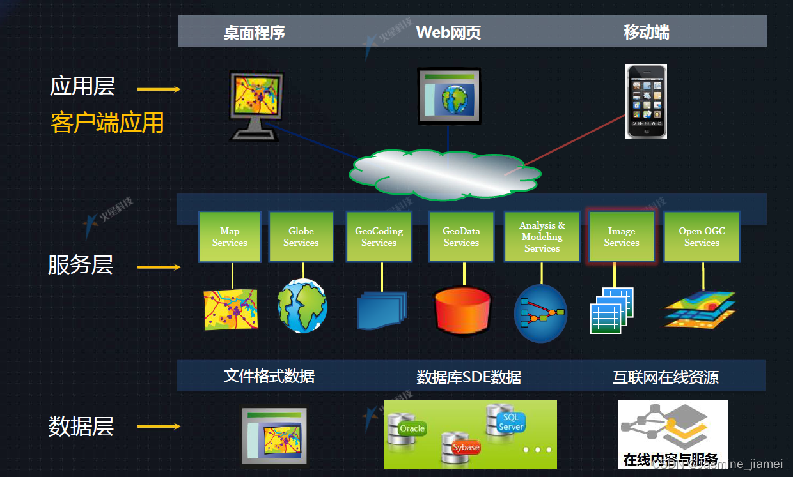

根据客户需求，开发定制化的GIS系统，实现空间数据的管理、分析和可视化
我们根据客户的具体需求，开发定制化的GIS系统，实现空间数据的管理、分析和可视化。我们的GIS系统开发服务涵盖了从需求分析、系统设计到开发实施的全流程。
我们的开发团队拥有丰富的GIS系统开发经验，能够使用各种GIS开发技术和工具，为客户提供高质量的GIS系统。
我们的GIS系统广泛应用于城市规划、环境监测、交通管理、国土资源等领域，为客户的决策提供科学依据。

根据客户的具体需求，开发定制化的GIS系统。
实现空间数据的直观可视化，便于分析和决策。
与客户现有的信息系统进行集成，实现数据共享。
提供系统上线后的技术支持和维护服务。